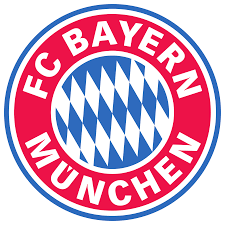

| الـبــيـــانــات الــشــخــصــيــة | ||
| الاسم الكامل | ألفونسو بويل ديفيس | |
| تاريخ الميلاد | نوفمبر 2000 2 | |
| محل الميلاد | بودوبورام، غانا | |
| العمر | 20سنة | |
| الطول | 1.83 م (6 قدم 0 بوصة)[1] | |
| الجنسية | ليبيريا وكندا | |
| محل الاقامة | كندا | |
| مركز اللعب | ظهير أيسر، جناح | |
ألفونسو بويل ديفيس (بالإنجليزية: Alphonso Boyle Davies؛ 2 نوفمبر 2000) هو لاعب كرة قدم كندي، يلعب كظهير أيسر أو جناح مع نادي بايرن ميونخ في الدوري الألماني الدرجة الأولى ومنتخب كندا لكرة القدم. كان ديفيس أول لاعب ولد في العقد الأول من القرن الحادي والعشرين يلعب في إحدى مباريات الدوري الأمريكي لكرة القدم. انضم ديفيس إلى بايرن ميونخ في يناير 2019 من فانكوفر وايتكابس في الدوري الأمريكي لكرة القدم بموجب عقد يستمر حتى عام 2023 مقابل رسوم انتقال قياسية في الدوري الأمريكي حينها. حصل ديفيس على لقب أفضل لاعب في الدوري الألماني لعام 2019–20. في يونيو 2017، أصبح أصغر لاعب يشارك مع المنتخب الكندي. من خلال تسجيله لهدفين في مباراة كأس الكونكاكاف الذهبية 2017 ضد غويانا الفرنسية، أصبح أصغر لاعب يسجل للمنتخب الكندي، وأصغر لاعب يسجل في كأس الكونكاكاف الذهبية، وأول لاعب ولد في الألفية الجديدة يسجل في بطولة دولية كبرى.